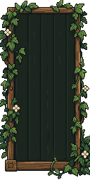
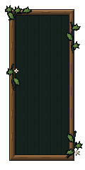
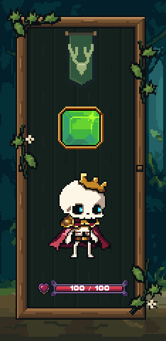
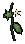
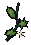
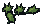
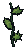
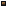
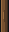
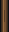

Stage 2 · portrait candidate · no mergeEnchanted Forest player portrait
Warm timber, restrained ivy and a dark recessed fill. Same 98×220 portrait, 12-pixel inset and clipped overfill. Approved Stage 1 scenery and shared dimensions preserved.
Actual Unity capture · static character and UI readability samples. Art-only review, not production combat.
Native artwork and generation source
The PixelLab source supplied the design and materials. LibreSprite rebuilt exact repeating rails and corners and simplified the foliage; the raw image was not stretched into a frame.

Raw PixelLab · 128×256 at 2× · 18 colors
Native 1× · 14-color libraryNearest-neighbor 2× · separate native pieces
Actual Unity portrait with unchanged contents
14 modular pieces
Corner_BL · 15×15 · 5 colorsCorner_BR · 15×15 · 5 colorsCorner_TL · 15×15 · 6 colorsCorner_TR · 15×15 · 6 colorsInset · 32×32 · 3 colors
Ivy_LeftReturn · 25×44 · 7 colors
Ivy_LowerRight · 31×45 · 7 colors
Ivy_UpperLeft · 43×27 · 5 colors
Ivy_UpperRight · 26×50 · 5 colors
Join · 7×7 · 4 colorsRail_Bottom · 32×9 · 5 colors
Rail_Left · 9×32 · 5 colors
Rail_Right · 9×32 · 5 colorsRail_Top · 32×9 · 6 colors
Checks passed
Unity compilation and portrait review; five frame sizes; whole-pixel ivy anchors; binary transparency; all rail/corner seams; saved LibreSprite reopen; exact 2× capture; no mask spill. Retained image bindings and positions match Stage 1. Board dimensions, lower HUD and production scenes remain untouched.
Stage notes · Native asset checks · Unity/preservation evidence · Large Unity capture
Stop here for approval before Stage 3.